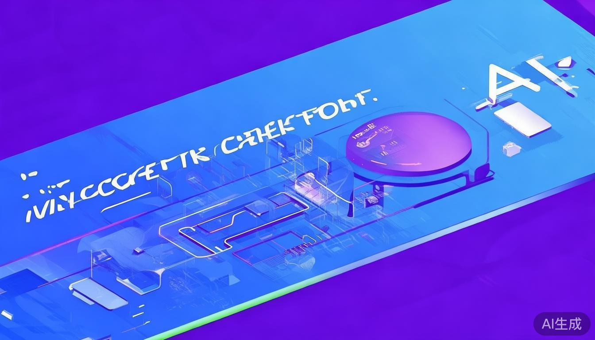

白驹 · 全局大脑 · 科学实验室
机器学习入门（从零到能跑）
机器学习 = 让程序从数据里"学"出规律，而不是人工写死规则。
一、本目录可运行代码（纯 Python，零依赖）
| 文件 | 内容 |
|---|---|
01_linear_regression.py |
线性回归 + 梯度下降（监督学习） |
02_knn.py |
K 近邻分类（监督学习） |
03_kmeans.py |
K-Means 聚类（无监督学习） |
跑法：python 01_linear_regression.py
二、核心概念（先搞懂这 4 个）

- 监督学习：有标签（输入正确答案），学预测。分类/回归。
- 无监督学习：无标签，学结构。聚类/降维。
- 损失函数：衡量"错多少"，如均方误差 MSE。
- 梯度下降：沿"最陡下降"方向一步步调参数，逼近最优。
三、主流方向地图
| 方向 | 干嘛 | 代表 |
|---|---|---|
| 传统 ML | 表格数据、回归分类 | 线性回归、决策树、SVM、随机森林 |
| 深度学习 | 图像/语音/文本 | CNN、RNN、Transformer |
| 大模型 | 通用对话/生成 | GPT、DeepSeek、Qwen |
| 强化学习 | 决策/游戏/机器人 | Q-learning、PPO（AlphaGo） |
四、学习路径
- Python + numpy/pandas（处理数据）
- 传统 ML：sklearn 跑通线性回归、决策树、聚类
- 深度学习：PyTorch 跑通手写数字识别（MNIST）
- 大模型应用：调用 API、RAG、微调（LoRA）
- 全程：用 DeepSeek 当老师 + 结对写代码 + 写测试
五、一句话提示词入门
请用最通俗的话解释「梯度下降」，再写一个最小可运行的 Python 例子，
并用注释逐步讲解，最后给我 3 个练习。